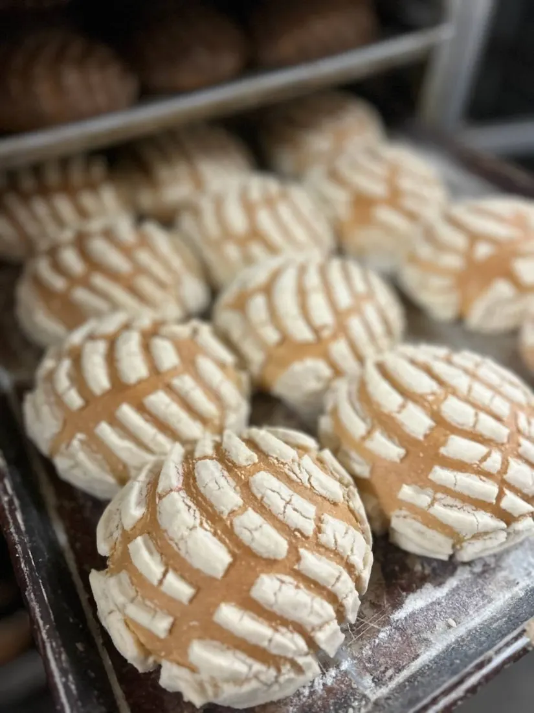
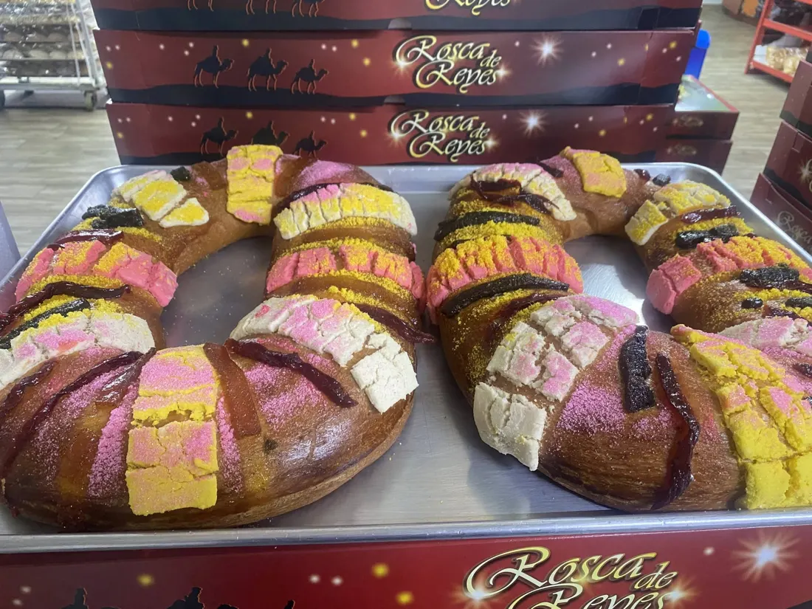
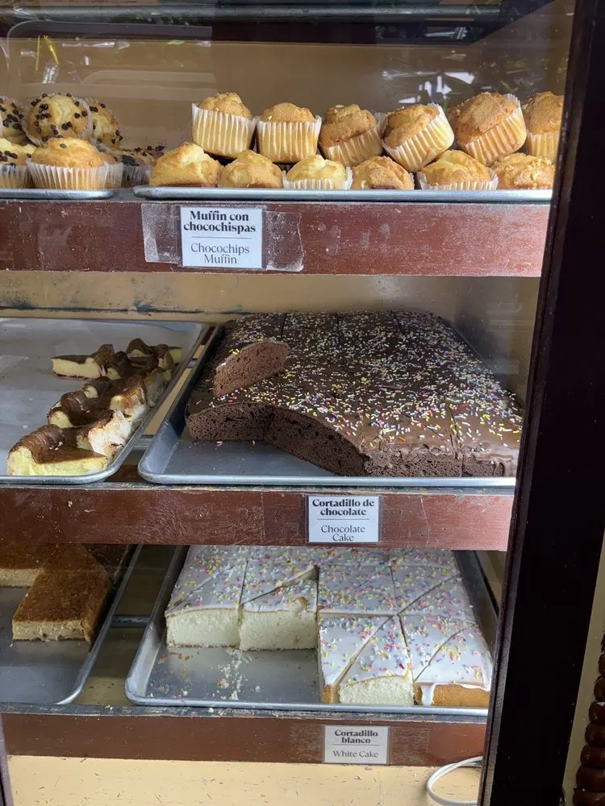
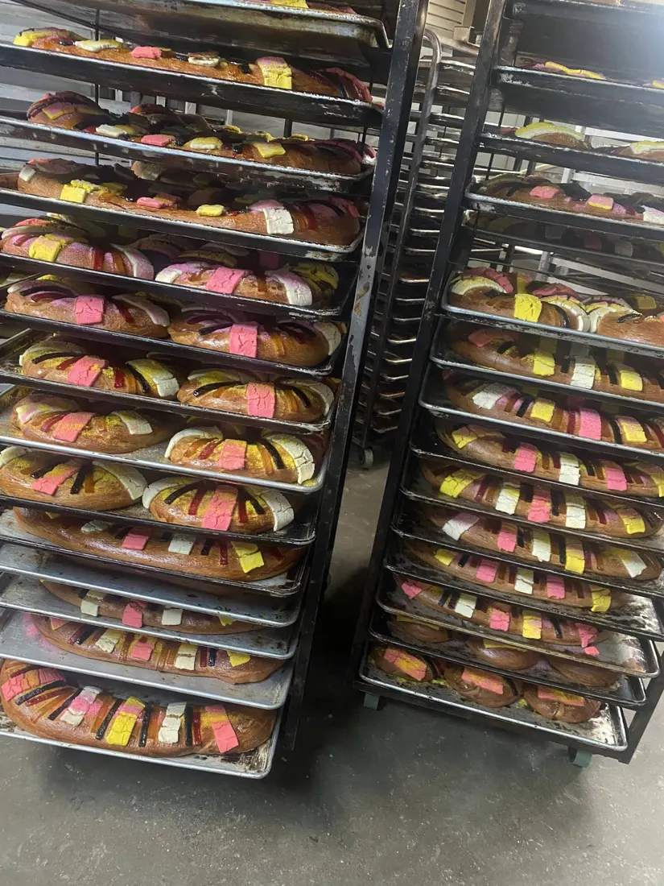
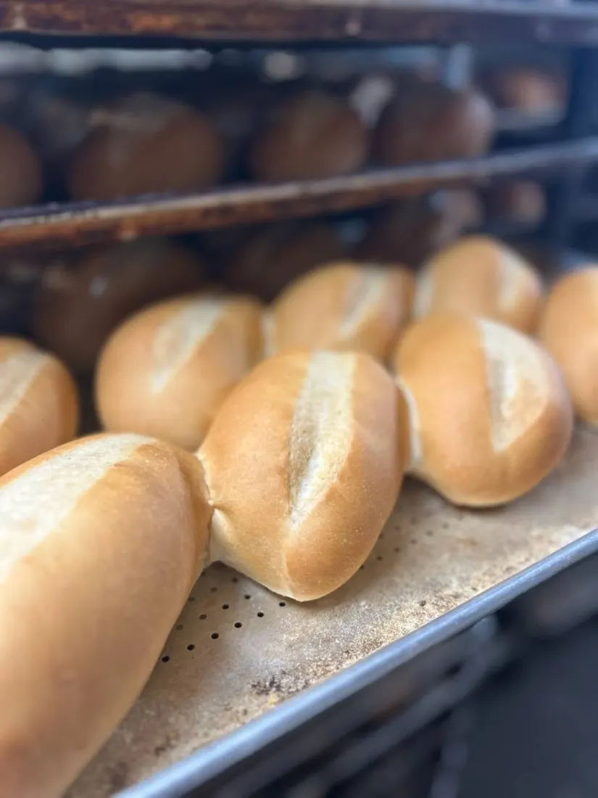
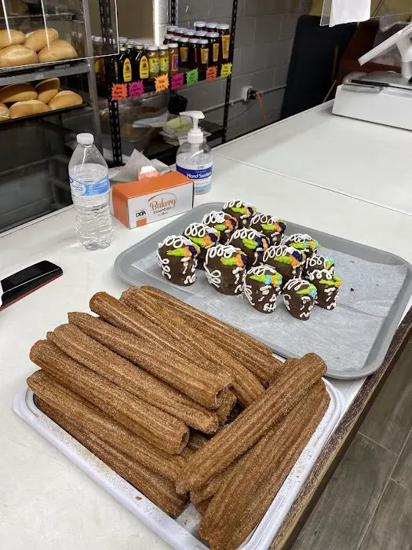
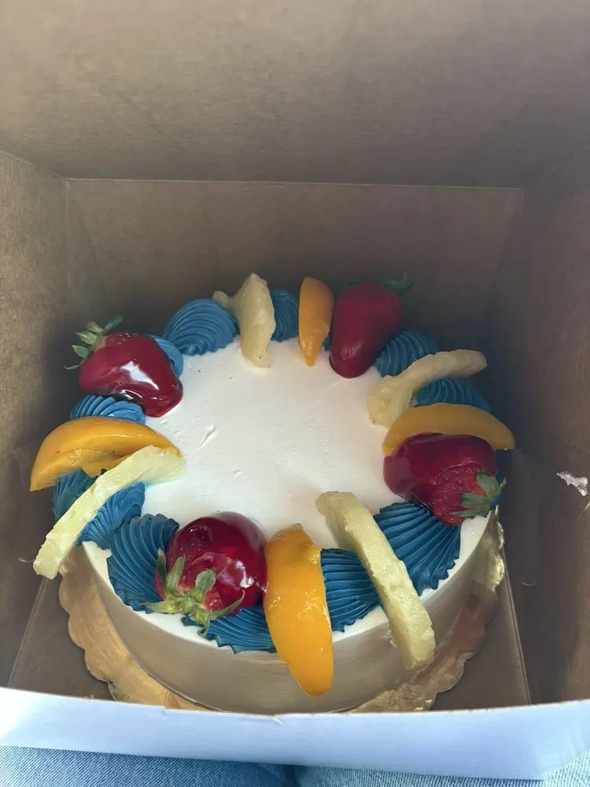
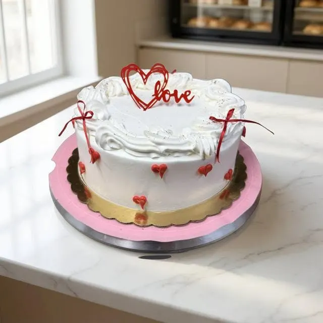

Concha de Vainilla
El clásico. Pan suave con su costra de azúcar crujiente.
Precio en tienda
A lo largo de 18 años, Panadería Celaya ha brindado el sabor auténtico de México a Grand Prairie y a todo el Metroplex de DFW — amasado antes del amanecer y horneado con mucho corazón.

Visitar Panadería Celaya es una tradición de barrio que une a las familias. Así se vive nuestra panadería cada mañana:
Al entrar, toma tu charola de metal y tus pinzas. Recorre nuestras vitrinas de madera y elige a tu gusto conchas, bolillos, marranitos, cortadillos y empanadas.
Nuestros panaderos comienzan su jornada de madrugada para amasar y calentar los hornos. El pan sale caliente y listo para llevar desde que abrimos a las 6:00 AM.
Cada sábado y domingo por la mañana tenemos tamales calientes (de puerco y pollo) y barbacoa por libra. ¡Llega temprano porque se acaban rápido!
Una probadita de lo que sale caliente de nuestros hornos cada mañana.

El clásico. Pan suave con su costra de azúcar crujiente.

Galleta suave de piloncillo con forma de marranito.

Relleno de calabaza de verdad, horneada al día.

Crujiente por fuera, suave por dentro. ¡Perfecto para tortas! Se acaban rápido — ven temprano.

Relleno de cajeta caramelizada.

Nuestro pastel más querido. Con o sin fruta. Pide con 3 días para uno personalizado.
Desde nuestro legendario pastel de Tres Leches decorado con fruta natural fresca hasta pasteles personalizados para quinceañeras, bodas y cumpleaños.
🎂 Ver Diseños y Opciones de Pasteles
Conoce Nuestra Historia de 18 Años →“Dieciocho años se dicen fácil, pero están llenos de madrugadas, de hornos calientes y, sobre todo, de mucho corazón. Desde el primer día nuestra misión ha sido ofrecerles la mejor calidad, siendo un lugar donde el aroma a pan fresco es sinónimo de hogar.”
— La Familia Celaya